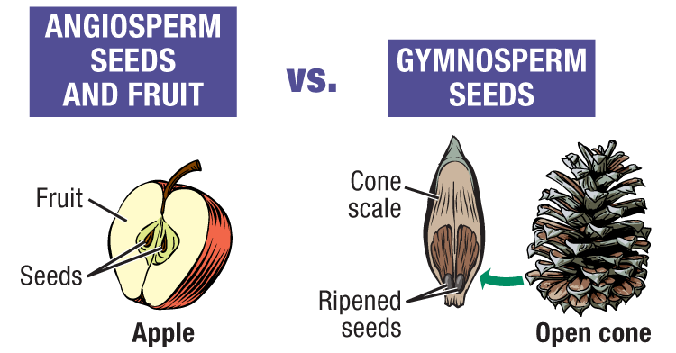

When identifying trees, you need to determine whether they are conifers or deciduous trees.
Angiosperms are a taxonomic class of plants in which the mature seed is surrounded by the ovule (think of an apple). This group is often referred to as hardwoods. Angiosperms are trees have broad leaves that usually change color and die every autumn. Oaks, maples and dogwoods are examples of deciduous trees. Some angiosperms that hold their leaves include rhododendron, live oak, and sweetbay magnolia.
Gymnosperms are a taxonomic class that includes plants whose seeds are not enclosed in an ovule (like a pine cone). Gymnosperm means as "naked seed". This group is often referred to as softwoods. Gymnosperms usually have needles that stay green throughout the year. Examples are pines, cedars, spruces and firs. Some gymnosperms do drop their leaves - ginkgo, dawn redwood, and baldcypress, to name a few.